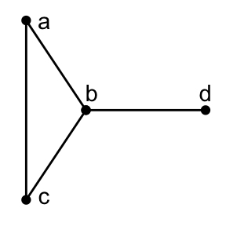

Chapter 1 Subconstituent Algebra of a Graph
Wednesday, January 20, 1993
A graph (undirected, without loops or multiple edges) is a pair \(\Gamma = (X, E)\), where
\[\begin{eqnarray*} X &=& \textrm{finite set (of vertices)}\\ E &=& \textrm{set of (distinct) 2-element subsets of }X \textrm{ (= edges of ) }\Gamma. \end{eqnarray*}\]
The vertices \(x\) and \(y\in X\) are adjacent if and only if \(xy\in E\).
Example 1.1 Let \(\Gamma\) be a graph. \(X = \{a, b, c, d\}\), \(E = \{ab, ac, bc, bd\}\).

Set \(n = |X|\), the order of \(\Gamma\).
Pick a field \(K\) (\(=\mathbb{R}\) or \(\mathbb{C}\)). Then \(\mathrm{Mat}_X(K)\) denotes the \(K\) algebra of all \(n\times n\) matrices with entries in \(K\). (rows and columns are indexed by \(X\))
Adjacency matrix \(A\in \mathrm{Mat}_X(K)\) is defined by \[\begin{align} A_{xy} & = \left\{\begin{array}{cl} 1 & \textrm{ if } \; xy\in E,\\ 0 & \textrm{ else.} \end{array}\right. \end{align}\]
Example 1.2 Let \(a, b, c, d\) be labels of rows and columns. Then \[A = \begin{matrix} \\ a\\ b\\c\\d\end{matrix}\begin{matrix}\begin{matrix} a & b & c & d \end{matrix}\\\begin{pmatrix} 0 & 1 & 1 & 0 \\ 1 & 0 & 1 & 1 \\ 1 & 1 & 0 & 0 \\ 0 & 1 & 0 & 0 \end{pmatrix}\end{matrix}\]
The subalgebra \(M\) of \(\mathrm{Mat}_X(K)\) generated by \(A\) is called the Bose-Mesner algebra of \(\Gamma\).
Set \(V = K^n\), the set of \(n\)-dimensional column vectors, the coordinates are indexed by \(X\).
Let \(\langle\; , \;\rangle\) denote the Hermitean inner product: \[\langle u, v\rangle = u^\top\cdot \bar{v} \quad (u, v\in V)\] \(V\) with \(\langle\; , \;\rangle\) is the standard module of \(\Gamma\).
\(M\) acts on \(V\): For every \(x\in X\), write \[\hat{x} = \begin{pmatrix} 0 \\ \vdots \\ 0 \\ 1 \\ 0 \\ \vdots \\ 0 \end{pmatrix}\begin{matrix} \\ \\ \leftarrow x \\ \\ \\ \end{matrix}\] where \(1\) is at the \(x\) position.
Then \[A\hat{x} = \sum_{y\in X, xy\in E}\hat{y}.\] Since \(A\) is a real symmetrix matrix, \[V = V_0 + V_1 + \cdots + V_r \quad \textrm{ some } r\in \mathbb{Z}^{\geq0},\] the orthogonal direct sum of maximal \(A\)-eigenspaces.
Let \(E_i\in\mathrm{Mat}_X(K)\) denote the orthogonal projection, \[E_i: V \longrightarrow V_i.\] Then \(E_0, \ldots, E_r\) are the primitive idempotents of \(M\). \[M = \mathrm{Span}_K(E_0, \ldots, E_r),\] \[E_iE_j = \delta_{ij}E_i \quad \textrm{for all }\; i, j, \quad E_0 + \cdots + E_r = I.\] Let \(\theta_i\) denote the eigenvalue of \(A\) for \(V_i\) in \(\mathbb{R}\). Without loss of generality we may assume that \[\theta_0 > \theta_1 > \cdots > \theta_r.\] Let \[m_i = \textrm{the multiplicity of }\: \theta_i = \mathrm{dim} V_i = \mathrm{rank} E_i.\] Set \[\mathrm{Spec}(\Gamma) = \begin{pmatrix} \theta_0, & \theta_1, & \ldots, & \theta_r\\m_0, & m_1, & \ldots, & m_r\end{pmatrix}.\] Problem. What can we say about \(\Gamma\) when \(\mathrm{Spec}(\Gamma)\) is given?
The following Lemma 1.1, is an example of Problem.
For every \(x\in X\), \[k(x) \equiv \textrm{ valency of }x \equiv \textrm{ degree of }x \equiv |\{y\mid y\in X, \: xy\in E\}|.\]
Definition 1.1 The graph \(\Gamma\) is regular of valency \(k\) if \(k = k(x)\) for every \(x\in X\).
Lemma 1.1 With the above notation,
\((ii)\) If \(\Gamma\) is regular of valency \(k\), then \(\theta_0 = k\).
Proof. \((i)\) Without loss of generality we may assume that \(\theta_0>0\), else done. Let \(v:=\sum_{x\in X}\alpha_x\hat{x}\) denote the eivenvector for \(\theta_0\).
Pick \(x\in X\) with \(|\alpha_x|\) maximal. Then \(|\alpha_x|\neq 0\).
Since \(Av = \theta_0v\), \[\theta_0\alpha_x = \sum_{y\in X, xy\in E}\alpha_y.\] So, \[\theta_0 |\alpha_x| = |\theta_0\alpha_x| \leq \sum_{y\in X, xy\in E}|\alpha_y| \leq k(x)|\alpha_x| \leq k^{\max}|\alpha_x|.\]
Let \(x, y\in X\) and \(\ell \in \mathbb{Z}^{\geq 0}\).
Definition 1.2 A path of length \(\ell\) connecting \(x, y\) is a sequence \[x = x_0, x_1, \ldots, x_{\ell} = y, \quad x_i\in X \quad (0\leq i\leq \ell)\] such that \(x_ix_{i+1}\in E\) for all \(i\) \((0\leq i \leq \ell-1)\).
Definition 1.3 The distance \(\partial(x,y)\) is the length of a shortest path connecting \(x\) and \(y\). \[\partial(x,y) \in \mathbb{Z}^{\geq 0} \cup \{\infty\}.\]
Definition 1.4 The graph \(\Gamma\) is connected if and only if \(\partial(x,y) < \infty\) for all \(x, y\in X\).
From now on, assume that \(\Gamma\) is connected with \(|X|\geq 2\).
Set \[d_\Gamma = d = \max\{\partial(x,y)\mid x, y\in X\} \equiv \textit{the diameter of }\;\Gamma.\]
Definition 1.5 For each vertex \(x\in X\), \[d(x) = \textit{the diameter with respect to }\: x = \max\{\partial(x,y)\mid y\in X\} \leq d.\]
Fix a ‘base’ vertex \(x\in X\).
Observe that \[V = V_0^* + V_1^* + \cdots + V_{d(x)}^* \quad \textrm{(orthogonal direct sum)},\] where \[V_i^* = \mathrm{Span}_K(\hat{y}\mid \partial(x,y) = i) \equiv V_i^*(x)\] and \(V_i^* = V_i^*(x)\) is called the \(i\)-th subconstituent with respect to \(x\).
Let \(E_i^* = E_i^*(x)\) denote the orthogonal projection \[E_i^*: V \longrightarrow V_i^*(x).\] View \(E_i^*(x) \in \mathrm{Mat}_X(K)\). So, \(E_i^*(x)\) is diagonal with \(yy\) entry: \[(E_i^*(x))_{yy} = \begin{cases} 1 & \textrm{if } \: \partial(x,y) = i,\\ 0 & \textrm{else,}\end{cases} \quad \textrm{ for } y\in X.\] Set \[M^* = M^*(x) \equiv \textrm{Span}_K(E_0^*(x), \ldots, E_{d(x)}^*(x)).\] Then \(M^*(x)\) is a commutative subalgebra of \(\mathrm{Mat}_X(K)\) and is called the dual Bose-Mesner algbara with respect to \(x\).
Definition 1.6 (Subconstituent Algebra) Let \(\Gamma = (X, E)\), \(x\), \(M\), \(M^*(x)\) be as above. Let \(T = T(x)\) denote the subalgebra of \(\mathrm{Mat}_X(K)\) generated by \(M\) and \(M^*(x)\). \(T\) is the subconstituent algebra of \(\Gamma\) with respect to \(x\).
Definition 1.7 A \(T\)-module is any subspace \(W\subseteq V\) such that \(aw\in W\) for all \(a\in T\) and \(w\in W\).
\(T\)-module \(W\) is irreducible if and only if \(W\neq 0\) and \(W\) does not properly contain a nonzero \(T\)-module.
For any \(a\in \mathrm{Mat}_X(K)\), let \(a^*\) denbote the conjugate transpose of \(a\).
Observe that \[\langle au, v\rangle = \langle u, a^*v\rangle \quad \textrm{for all }\; a\in \mathrm{Mat}_X(K), \textrm{ and for all } \; u,v\in V.\]
Lemma 1.2 Let \(\Gamma = (X,E)\), \(x\in X\) and \(T \equiv T(x)\) be as above.
\[W^\bot := \{v\in V\mid \langle w, v\rangle = 0, \textrm{ for all }w\in W\}\] is a \(T\)-module.
Proof. \((i)\) It is becase \(T\) is generated by symmetric real matrices \[A, E^*_0(x), E^*_1(x), \ldots, E^*_{d(x)}(x).\]
\[\langle w, av\rangle = \langle a^*w, v\rangle = 0\] as \(a^*\in T\).
\[V = W + W^\bot \quad \textrm{(orthogonal direct sum)}.\]
Problem. What does the structure of the \(T(x)\)-module tell us about \(\Gamma\)?
Study those \(\Gamma\) whose modules take ‘simple’ form. The \(\Gamma\)’s involved are highly regular.
HS MEMO
- The subconstituent algebra \(T\) is semisimple as the left regular representation of \(T\) is completely reducible. See Curtis-Reiner 25.2 (Charles W. Curtis 2006).
- The inner product \(\langle a, b\rangle_T = \mathrm{tr}(a^\top\bar{b})\) is nondegenerate on \(T\).
- In general, \[\begin{align*} T\textrm{: Semisimple and Artinian} & \Leftrightarrow T\textrm{: Artinian with } J(T) = 0 \\ & \Leftarrow T\textrm{: Artinian with nonzero nilpotent element} \\ & \Leftarrow T \subset \mathrm{Mat}_X(K) \textrm{ such that for all } a\in T \textrm{ is normal.} \end{align*}\]